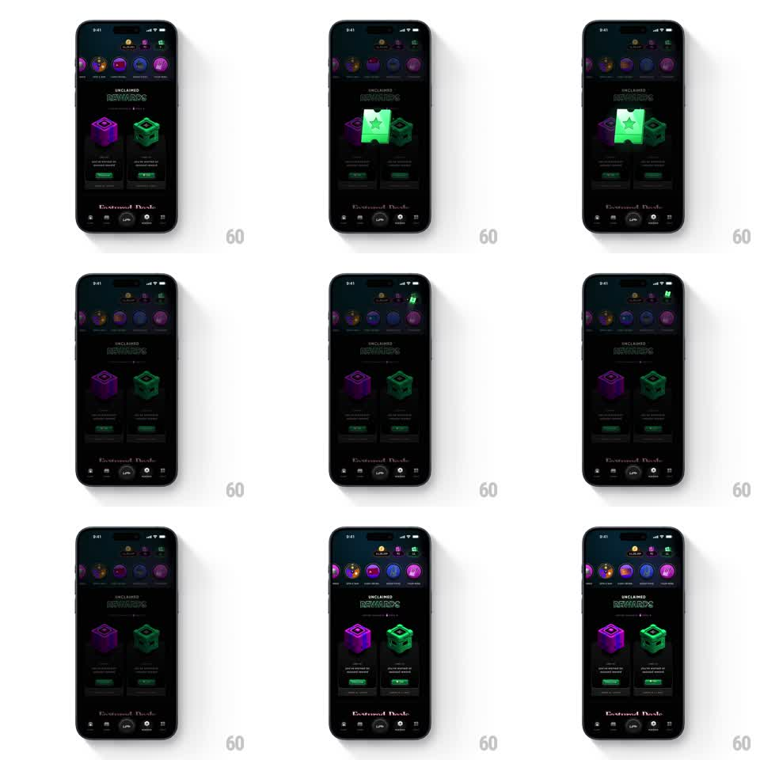

Media
Frame-by-frame

Rebuild this animation 1:1: CRED's reward claim - tapping "claim now" pops a glowing green voucher out of the reward card, and it arcs up to the wallet icon in the header, shrinking as it flies.

Rebuild this animation 1:1: CRED's reward claim - tapping "claim now" pops a glowing green voucher out of the reward card, and it arcs up to the wallet icon in the header, shrinking as it flies. ## Integration Integration: stack-agnostic spec - springs given as stiffness/damping, timed motions as duration + curve; map every value to your framework and animation library of choice. ## Scene CRED "UNCLAIMED REWARDS" page, near-black: a header row of reward category icons with a wallet icon at top right, and two reward cards - each a dark panel with a neon 3D box illustration (purple, green), copy, and a "claim now" button. The claimed voucher: a glowing green ticket with a star cutout. ## Motion spec Pattern: claim pop + fly-to-wallet arc. - Tap "claim now": the button collapses (width shrinks, 150ms) and the green voucher pops out of the card's illustration (scale 0 -> 1.2 -> 1, spring ~400/14, rotateZ 0 -> 8 degrees) with a soft green glow bloom behind it. - Beat: the voucher holds 250ms, glow pulsing once. - The voucher flies to the wallet icon along an arcing path (quadratic bezier toward top-right, 550ms, ease-in), scaling 1 -> 0.25 and rotating to -12 degrees as it travels; its glow trails faintly. - On arrival: the wallet icon flashes green and pulses (scale 1 -> 1.15 -> 1, 250ms) as the voucher fades out into it. - The claimed card dims and its copy updates to the claimed state (crossfade, 300ms). ## Calibration - The voucher is self-illuminated - it should be the brightest thing on screen for the whole flight. - The arc is tall enough to clear the header icon row; it never clips behind the cards. ## Reduced motion Voucher fades out at the card (250ms); wallet icon pulses once. ## Don't miss - The pop starts from the exact position of the card's box illustration - it replaces it, not floats above. - The wallet pulse lands on the same frame the voucher's scale hits its minimum.